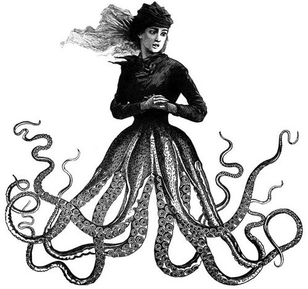

DISSOCIATION
"Le réel et le tangible sont difficiles à dissocier du trompe-l'œil et de l'illusoire."
Thomas MANN
Thomas MANN
La dissociation consiste à séparer des éléments qui sont unis. Autre qu'un état de conscience naturel que l'on traverse usuellement dans la rêverie diurne, la dissociation en hypnose est une technique utilisée pour séparer le conscient de l'inconscient, ce qui créé le sentiment d'involontariat. Cela marque une distance entre le volontaire et le corps et ses représentations symboliques. Le dissocié devient spectateur de lui-même, générant ainsi une modulation émotionnelle.
La dissociation dans son pan pathologique se retrouve principalement dans les psychoses, les déréalisations, les dépersonnalisations mais également dans les syndromes post traumatiques, l'anxiété pathologique ou encore les troubles du comportements incorporant une distorsion de l'image du corps et des sens.
La dissociation est toujours relative : un élément ne peut être dissocié que par rapport à un autre. La dissociation est une dis- assocation. Cependant, à force de dissocier, par mécanisme salutaire, on peut en oublier de réassocier. L'hypnose se place ici, dans un mouvement contrôlé de coaptation et de décoaptation psychique .
De façon générale, la dissociation peut être comprise comme un processus auto-hypnotique, c’est-à-dire un état de conscience modifié sans induction externe qui permet au sujet de se protéger dans les situations de tension auxquelles il ne peut plus faire face. Un tel processus diffère du fonctionnement normal sur le plan de la contrôlabilité tout en interférant avec lui. Lorsque cette aptitude défensive perdure au-delà d’un danger ressenti ou percu, de façon rigide et perturbante pour le sujet, c’est le signe d’une dissociation pathologique induisant des symptômes traumatiques, ce qui définit le deuxième type de dissociation : la dissociation traumatique qui se chronicise. Celle-ci est décrite comme étant un processus de séparation mentale structurée affectant les perceptions, les émotions, la mémoire et l’identité qui sont normalement intégrées et accessibles à la conscience. Même si l’expérience reste accessible à la conscience, elle est perturbée au niveau qualitatif, au niveau de la relation à soi ou au niveau du contrôle volontaire exercé (flash-backs…). Par ailleurs, le sujet n’a pas de conscience réfléchie de ce processus.
La dissociation dans son pan pathologique se retrouve principalement dans les psychoses, les déréalisations, les dépersonnalisations mais également dans les syndromes post traumatiques, l'anxiété pathologique ou encore les troubles du comportements incorporant une distorsion de l'image du corps et des sens.
La dissociation est toujours relative : un élément ne peut être dissocié que par rapport à un autre. La dissociation est une dis- assocation. Cependant, à force de dissocier, par mécanisme salutaire, on peut en oublier de réassocier. L'hypnose se place ici, dans un mouvement contrôlé de coaptation et de décoaptation psychique .
De façon générale, la dissociation peut être comprise comme un processus auto-hypnotique, c’est-à-dire un état de conscience modifié sans induction externe qui permet au sujet de se protéger dans les situations de tension auxquelles il ne peut plus faire face. Un tel processus diffère du fonctionnement normal sur le plan de la contrôlabilité tout en interférant avec lui. Lorsque cette aptitude défensive perdure au-delà d’un danger ressenti ou percu, de façon rigide et perturbante pour le sujet, c’est le signe d’une dissociation pathologique induisant des symptômes traumatiques, ce qui définit le deuxième type de dissociation : la dissociation traumatique qui se chronicise. Celle-ci est décrite comme étant un processus de séparation mentale structurée affectant les perceptions, les émotions, la mémoire et l’identité qui sont normalement intégrées et accessibles à la conscience. Même si l’expérience reste accessible à la conscience, elle est perturbée au niveau qualitatif, au niveau de la relation à soi ou au niveau du contrôle volontaire exercé (flash-backs…). Par ailleurs, le sujet n’a pas de conscience réfléchie de ce processus.

Dans le cas d'un traumatisme, cela fait office de moyen de défense face à la situation qui devient pathologique lorsqu’il perdure au-delà du danger et désorganise le sujet. La fission psychique serait une réponse adaptative à un événement stressant : le sujet garde un contrôle mental partiel alors que le contrôle physique est altéré. Si la dissociation se prolonge dans la vie quotidienne, elle permet à l’individu de se déconnecter de ses affects et d’éviter l’émergence de souvenirs traumatiques.
L’état dissociatif traumatique et l’état dissociatif hypnotique ont ainsi en commun une altération de la perception et des fonctions normales d’intégration des souvenirs, de la conscience, du contrôle des mouvements corporels et de l’identité.
Lors de la dissociation traumatique le sujet peut présenter un arrêt de la pensée. En effet, il est en état de sidération et le fil du dialogue intérieur est rompu. Le sujet manifeste des difficultés d’élaboration à l’égard de ce qui paraît impensable, irréel. Les informations entrent dans la mémoire sans les explications qui devraient les accompagner.
Symétriquement, l’objectif en hypnothérapie est que le sujet se détache du souci de contrôle (par l’intellectualisation, le sens des mots, l’analyse…) pour s’ouvrir à l’expérience. Le sujet est invité à laisser de côté son esprit conscient et rationnel de façon à travailler avec l’imaginaire sur des ressentis, des images, des perceptions.
Dans la transe thérapeutique, l'association et sa dissociation sont un mouvement. Les phénomènes de catalepsie ou de lévitation impliquent qu’une partie du corps est dissociée du reste. Le sujet présente et vit une association particulièrement intense avec son vécu intérieur. Elle nécessite la création d’une relation stable et confiante entre l'hypnotiseur et l'hypnotisé. C’est dans cette association que peut naître l'alliance thérapeutique. D’ailleurs, chaque séance se termine par une dissociation de ce lien au profit d’une soigneuse réassociation avec le monde extérieur.
L’état dissociatif traumatique et l’état dissociatif hypnotique ont ainsi en commun une altération de la perception et des fonctions normales d’intégration des souvenirs, de la conscience, du contrôle des mouvements corporels et de l’identité.
Lors de la dissociation traumatique le sujet peut présenter un arrêt de la pensée. En effet, il est en état de sidération et le fil du dialogue intérieur est rompu. Le sujet manifeste des difficultés d’élaboration à l’égard de ce qui paraît impensable, irréel. Les informations entrent dans la mémoire sans les explications qui devraient les accompagner.
Symétriquement, l’objectif en hypnothérapie est que le sujet se détache du souci de contrôle (par l’intellectualisation, le sens des mots, l’analyse…) pour s’ouvrir à l’expérience. Le sujet est invité à laisser de côté son esprit conscient et rationnel de façon à travailler avec l’imaginaire sur des ressentis, des images, des perceptions.
Dans la transe thérapeutique, l'association et sa dissociation sont un mouvement. Les phénomènes de catalepsie ou de lévitation impliquent qu’une partie du corps est dissociée du reste. Le sujet présente et vit une association particulièrement intense avec son vécu intérieur. Elle nécessite la création d’une relation stable et confiante entre l'hypnotiseur et l'hypnotisé. C’est dans cette association que peut naître l'alliance thérapeutique. D’ailleurs, chaque séance se termine par une dissociation de ce lien au profit d’une soigneuse réassociation avec le monde extérieur.
EN RELATION

CORPS
PHANTASME
PEUR (désir)
TRAUMA
DOULEUR